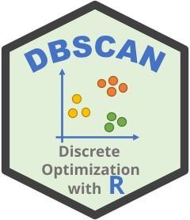
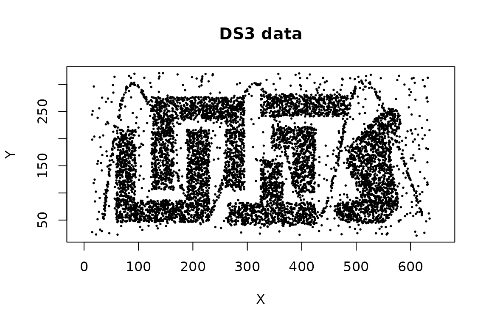

Nearest-Neighbor Clustering with jpclust and sNNclust
Michael Hahsler
Source:vignettes/nnclustering.Rmd
nnclustering.RmdThe dbscan package implements two clustering algorithms based on shared nearest neighbors:
-
jpclust()implements Jarvis–Patrick clustering; and -
sNNclust()implements shared nearest neighbor (SNN) clustering with a DBSCAN-style density step.
Both algorithms replace the original distances between observations with a local similarity: two observations are more similar when their lists of nearest neighbors have a large overlap. This can be useful when Euclidean distance alone does not describe local cluster structure well, especially in data with irregular shapes or differing local densities.
Shared nearest neighbors
For each observation, first find its k nearest
neighbors. The shared-neighbor similarity between two observations is
the number of neighbors appearing in both lists. The package treats each
observation as part of its own neighborhood when counting shared
neighbors, and the resulting similarity is between 0 and
k.
The algorithms use this information differently:
| Function | Link or neighborhood rule | Cluster formation | Noise model |
|---|---|---|---|
jpclust() |
Mutual nearest neighbors sharing at least
kt neighbors |
Connected components | No; isolated observations form small clusters |
sNNclust() |
Mutual nearest neighbors sharing at least
eps neighbors |
DBSCAN-style core, border, and density-connected points | Yes; label 0 denotes noise |
The thresholds kt and eps are counts of
shared neighbors. In particular, eps in
sNNclust() is not a distance radius and has a different
meaning from eps in dbscan().
Example data
We use the DS3 data supplied with the package. It
contains six irregularly-shaped groups together with noise and a
sinusoidal structure that intersects the groups.

For numeric matrices and data frames, both functions use Euclidean distance and fast kd-tree nearest-neighbor search. Variable scales therefore matter. Standardize variables when their units are not comparable and scaling is appropriate for the application.
Jarvis–Patrick clustering
Jarvis–Patrick clustering links two observations when both of the following conditions hold:
- Each observation is in the other’s
k-nearest-neighbor list. - Their neighborhoods share at least
ktneighbors.
Connected observations form clusters. Here we use neighborhoods of 20 points and require 12 shared neighbors.
jp <- jpclust(x, k = 20, kt = 12)
c(clusters = ncluster(jp), noise = nnoise(jp))
#> clusters noise
#> 43 0Cluster assignments are stored in jp$cluster in the same
order as the rows of x. The result also records the
algorithm name, distance metric, and parameters.
names(jp)
#> [1] "cluster" "type" "metric" "param"
jp$param
#> $k
#> [1] 20
#>
#> $kt
#> [1] 12
head(jp$cluster)
#> [1] 1 1 1 1 2 1The convenience function clplot() marks observations by
cluster. It uses the first two columns when the data have more than two
dimensions.
clplot(x, jp, cex = 0.25, main = "Jarvis-Patrick clustering")
#> Warning in hullplot(x, cl = cl, col = col, pch = pch, cex = cex, main = main, :
#> Not enough colors. Some colors will be reused.Jarvis–Patrick clustering has no explicit concept of noise.
Observations not connected to a larger group become singleton or other
small clusters rather than receiving label 0. Conversely, a
chain of qualifying links can join larger structures. In this example,
the sinusoidal points can connect groups that otherwise appear
separate.
Increasing kt makes the link rule stricter. This removes
edges from the shared-neighbor graph and can split clusters or create
more small components. Decreasing kt adds edges and can
merge clusters through chaining.
jp_settings <- c(10, 12, 14)
jp_fits <- lapply(
jp_settings,
function(threshold) jpclust(x, k = 20, kt = threshold)
)
data.frame(
kt = jp_settings,
clusters = vapply(jp_fits, ncluster, integer(1)),
singleton_clusters = vapply(
jp_fits,
function(fit) sum(table(fit$cluster) == 1L),
integer(1)
)
)
#> kt clusters singleton_clusters
#> 1 10 24 18
#> 2 12 43 33
#> 3 14 189 118The required range is 1 <= kt <= k. A useful
setting should preserve stable, meaningful components without
fragmenting the data into many tiny clusters.
Shared nearest neighbor clustering
sNNclust() adds a density model to the shared-neighbor
graph:
- Build
k-nearest-neighbor lists and their shared-neighbor similarities. - Retain mutual-neighbor relationships with similarity at least
eps. - Treat an observation as a core point if its SNN neighborhood
contains at least
minPtspoints. - Join density-connected core points and optionally assign border points.
For the example, two neighbors must share at least 7 of their 20 neighbors, and an observation needs a sufficiently dense SNN neighborhood of at least 16 points to become a core point.
snn <- sNNclust(x, k = 20, eps = 7, minPts = 16)
snn
#> SharedNN clustering for 8000 objects.
#> Parameters: k = 20, eps = 7, minPts = 16, borderPoints = 1
#> The clustering contains 10 cluster(s) and 187 noise points.
#>
#> 0 1 2 3 4 5 6 7 8 9 10
#> 187 1812 740 998 1770 667 1666 76 49 20 15
#>
#> Available fields: cluster, type, param, metricAs with DBSCAN, positive integers are arbitrary cluster identifiers
and 0 denotes noise.
clplot(x, snn, cex = 0.25, main = "Shared nearest neighbor clustering")
#> Warning in hullplot(x, cl = cl, col = col, pch = pch, cex = cex, main = main, :
#> Not enough colors. Some colors will be reused.The parameters control different parts of the algorithm:
-
kdetermines the scale at which local neighborhoods are compared. Small values emphasize very local structure; large values smooth the similarities over a wider neighborhood. -
epsis the minimum number of shared neighbors needed for an SNN relationship. Increasing it makes similarity more selective. -
minPtsis the density requirement in the thresholded SNN graph. Increasing it makes core-point status more difficult to attain and generally produces more noise. -
borderPoints = TRUE, the default, assigns non-core observations adjacent to a core cluster. Set it toFALSEfor a core-points-only result analogous to DBSCAN*.
Parameter effects interact, so inspect several nearby settings rather than selecting each value independently.
snn_settings <- data.frame(
eps = c(5, 7, 9),
minPts = c(16, 16, 16)
)
snn_fits <- lapply(
seq_len(nrow(snn_settings)),
function(i) sNNclust(
x,
k = 20,
eps = snn_settings$eps[i],
minPts = snn_settings$minPts[i]
)
)
transform(
snn_settings,
clusters = vapply(snn_fits, ncluster, integer(1)),
noise = vapply(snn_fits, nnoise, integer(1))
)
#> eps minPts clusters noise
#> 1 5 16 10 166
#> 2 7 16 10 187
#> 3 9 16 15 213Cluster counts alone do not identify the best solution. Examine whether the important groups persist, whether points labeled as noise are plausible, and whether conclusions are stable under small parameter changes.
Reuse a nearest-neighbor search
Nearest-neighbor search can be computed once and reused. This is
especially helpful when comparing algorithms or parameter settings on a
large data set. Compute at least the largest k that any
later fit will need.
nn <- kNN(x, k = 30)
jp_from_nn <- jpclust(nn, k = 20, kt = 12)
snn_from_nn <- sNNclust(nn, k = 20, eps = 7, minPts = 16)
c(
jp_same = identical(jp$cluster, jp_from_nn$cluster),
snn_same = identical(snn$cluster, snn_from_nn$cluster)
)
#> jp_same snn_same
#> TRUE TRUEWhen the full stored neighborhood should be used, k may
be omitted from jpclust() because it can be recovered from
the kNN object. Keep k explicit when using
only the first part of a larger precomputed neighborhood.
Inspect the shared-neighbor graph
The lower-level sNN() function exposes the
shared-neighbor calculation. Its shared matrix gives the
similarity between each observation and each of its k
nearest neighbors.
shared_nn <- sNN(nn, k = 20, jp = TRUE, sort = FALSE)
shared_nn
#> shared-nearest neighbors for 8000 objects (k=20, kt=NULL).
#> Available fields: dist, id, k, sort, metric, shared, sort_shared
table(shared_nn$shared)
#>
#> 0 2 3 4 5 6 7 8 9 10 11 12 13
#> 24250 20 56 204 592 1412 3094 5748 8748 11670 13902 15042 14862
#> 14 15 16 17 18 19 20
#> 13934 12872 11042 9236 7134 4646 1536Using jp = TRUE reproduces the mutual-neighbor
similarity used internally by sNNclust(). Use this
distribution as a diagnostic when selecting a shared-neighbor threshold.
sNN() can also apply a threshold directly and its graph can
be inspected with adjacencylist() or plotted for small data
sets; see ?sNN.
Use a precomputed distance matrix
Both clustering functions also accept a dist object.
This permits other distance measures, at the cost of storing all
pairwise distances and giving up the fast kd-tree search.
d <- dist(my_data, method = "manhattan")
jp_manhattan <- jpclust(d, k = 20, kt = 12)
snn_manhattan <- sNNclust(d, k = 20, eps = 7, minPts = 16)The distance matrix must be finite. Choose a distance measure, transformations, and scaling based on the meaning of the variables rather than solely on the resulting number of clusters.
Which method should you use?
Use jpclust() when a simple connected-components
interpretation of mutual shared-neighbor links is appropriate and small
components are meaningful. Use sNNclust() when the analysis
needs an explicit density requirement, noise labels, or control over
core and border points. For either method, k sets the
neighborhood scale and should reflect the smallest local structure that
needs to be retained.
References
Jarvis, R. A. and Patrick, E. A. (1973). Clustering Using a Similarity Measure Based on Shared Near Neighbors. IEEE Transactions on Computers, 22(11), 1025–1034. doi:10.1109/T-C.1973.223640.
Ertoz, L., Steinbach, M., and Kumar, V. (2003). Finding Clusters of Different Sizes, Shapes, and Densities in Noisy, High Dimensional Data. Proceedings of the 2003 SIAM International Conference on Data Mining, 47–58. doi:10.1137/1.9781611972733.5.